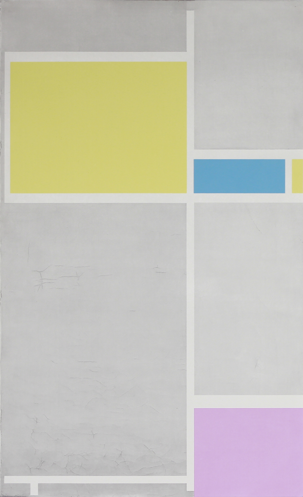
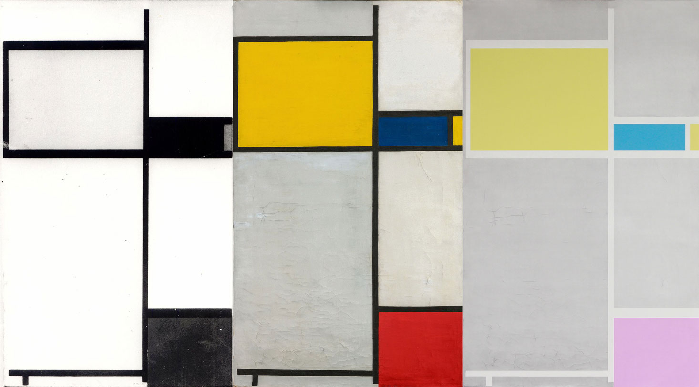
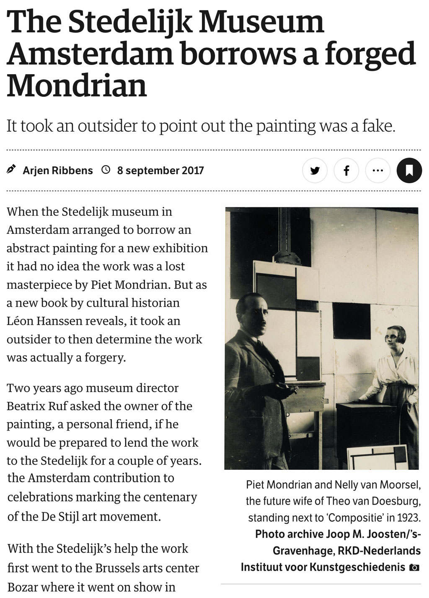

101 Years of De Stijl
2018 | Silkscreen | Price on request
This silkscreen displays an adjustment to the 1923 composition by Mondriaan. It was supposed to be the top piece of the Stedelijk Museum for its celebration of 100 years ‘De Stijl’. A Mondriaan biographer however revealed that the painting was fake and described this scandal in his latest book 'Alleen een wonder kan je dragen' [Only a wonder could carry you].
The important role that Mondriaan’s work and philosophy plays in the history of contemporary art is veiled with layers of commercialisation and capitalism. That is why his existence, that was purely devoted to art, regeneration and utopia must be celebrated – instead of being valued money-wise or as powerplay tools for art institutions.
I do want to celebrate Mondriaan’s legacy but not by clinging upon his material heritage. Instead I play with the promise that art will be preserved forever and should be authentic, while unavoidable signs of decay show us a different reality. My silkscreen is printed in pastel colours instead of primary ones because if the paintings weren’t protected by it’s importance and value, the colours would’ve faded anyway.
Happy 101 years of De Stijl!
To be continued..
Photographed by Rafael Romero


